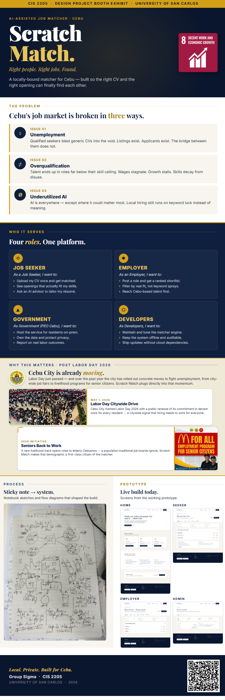

USC · CIS 2205 · Group Sigma · 2026
ScratchMatch
Match your work to the people who need it — within Cebu.
Post-Exhibit Final Presentation
Alignment
SDG 8 — Decent Work and Economic Growth
Scratch Match exists to push one specific UN sustainable development goal forward at the city level.
- Promotes full and productive employment by matching real skills to real openings.
- Reduces underemployment, especially for groups overlooked by generic job boards.
- Supports inclusive, locally-controlled labour systems that the city government can host on its own infrastructure.
May 1, 2026
Why this matters · Cebu City
Cebu City is already moving.
Labor Day 2026 marked a public renewal of the city's commitment to decent work for every resident — from citywide job fairs to new livelihood programmes. Scratch Match plugs directly into that momentum.


2026 Initiative
Seniors Back to Work
Reaching demographics the boards ignore.
A new livelihood track opens roles to elderly Cebuanos — a population traditional job boards effectively filter out. Local-first matching makes that demographic a first-class citizen of the system.

For Job Seekers
Upload once. Get matched.
01
CV upload & auto-match
Parse a PDF, embed it, surface the top open jobs
in Cebu with a score and a snippet.
02
Advisor chat (RAG)
"Tailor my CV for X" / "What jobs fit me?" —
grounded in your own CV and live Cebu listings.
03
Specialised job search
Search by skill or location with an optional
semantic toggle that uses the embeddings.
For Employers
Post once. See real fits.
01
Post a job (or upload the JD)
Same pipeline: parse, chunk, embed. Five open
roles per employer, kept lean by design.
02
Hiring assistant chat
"Find me three candidates for Job #2" —
the agent retrieves, summarises, and links to CVs.
03
Privacy-respecting candidate search
Seeker contact details are gated behind a
recorded match — never on browse.

The Prototype
Live build. Today.
Four primary surfaces, all driven from the same local pipeline, all rendered as real screens during the booth demo.
Home

Seeker
Employer
Admin

The Exhibit
From sticky note to standee.



Thank you
Local. Private.
Built for Cebu.
Scan to try the live build, or open a conversation with the team.

Group Sigma · CIS 2205 · University of San Carlos · 2026